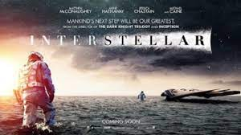

Merhaba, ben Hayriye Selçuk. İzmir'de yaşıyorum. Bilimkurgu izlemeyi ve kitap okumayı çok seviyorum. Web geliştirme ile ilgileniyorum. Kodluyoruz sayesinde çok daha güzel şeyler olacak ve olmaya devam ediyor.
Yıldızlar Arasında
Yıldızlararası (İngilizce: Interstellar), Christopher Nolan tarafından yönetilen epik bilimkurgu türündeki 2014 yapımı ABD filmi